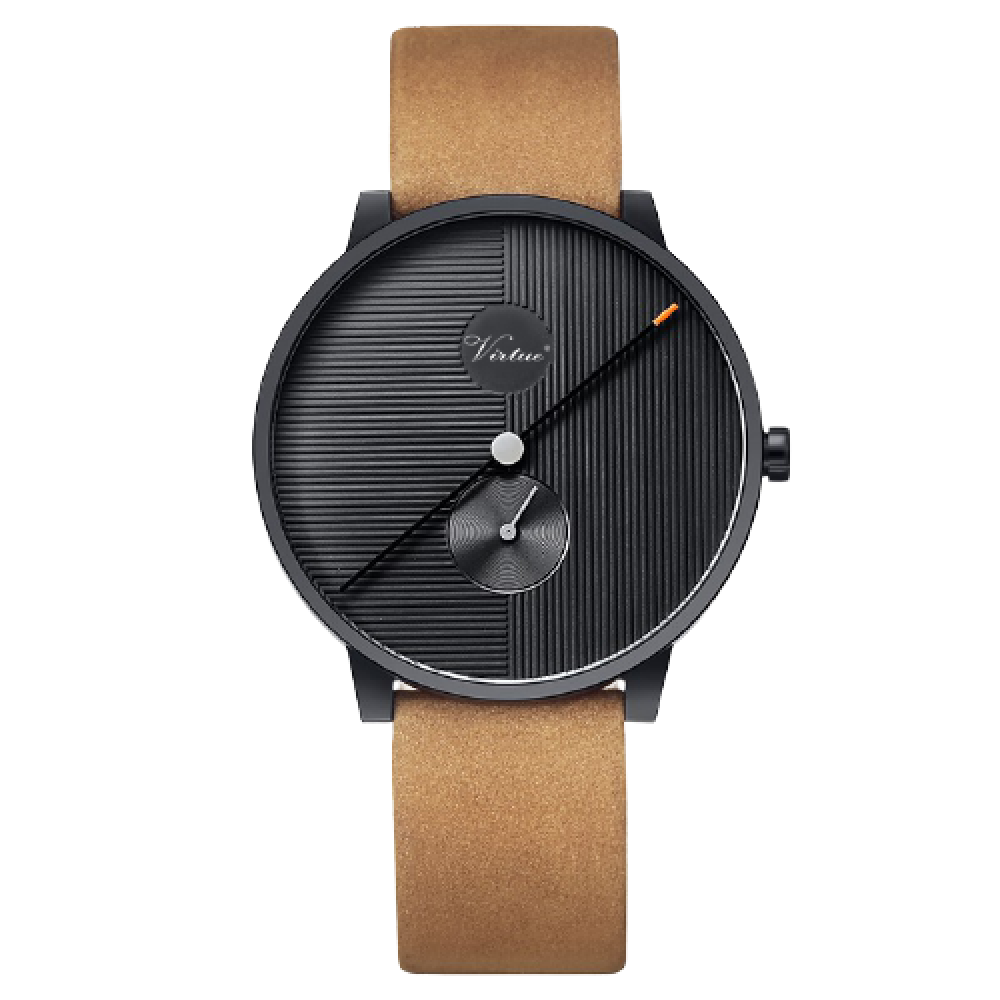

popular
Models
son22
The watch also features a tough and durable sapphire crystal glass and
comes with a Sw12-1 automatic winding

Sw12
The watch also features a tough and durable sapphire crystal glass and
comes with a Sw12-1 automatic winding
Product description
Inspired by the WWI trench watch, this timepiece has a contemporary
design with an urban style and a vintage soul. The 22 Design Studio
Concrete Sector Watch reinterprets the old timepiece with a concrete
dial. Handmade in Taiwan, the dial is cast in one piece using the béton
technique more detailed